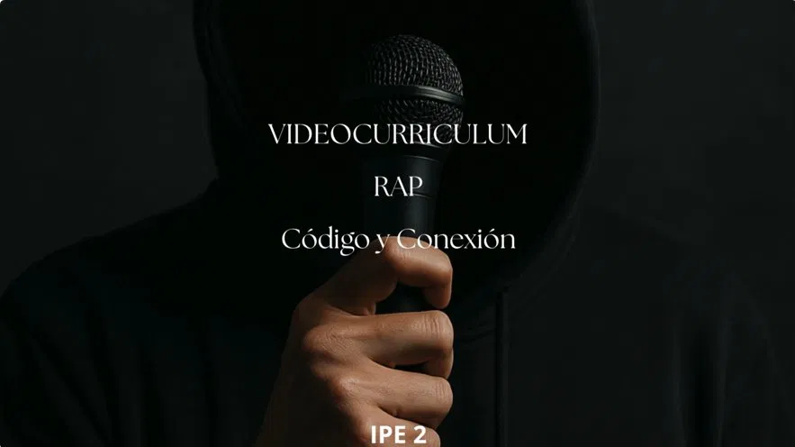

CRIS.ZAMBRANO_
◀ VOLVER
VIDEOCURRICULUM.EXE
C:\>
cat descripcion.txt
// Proyecto: Video Currículum — Rap
INFO:
Vídeo de presentación personal con libertad creativa total
INFO:
Formato elegido: RAP — título "Código y Conexión"
INFO:
Muestra personalidad, habilidades técnicas y creatividad
STATUS:
REPRODUCIENDO EN YOUTUBE ✓
🎬 MULTIMEDIA
🎤 RAP
🎞️ CLIPCHAMP
📹 VIDEO CV
◈ PORTADA ◈
▶ CÓDIGO Y CONEXIÓN
IPE 2 · 2026

◈ REPRODUCIR VÍDEO ◈
▶ YOUTUBE.EXE
youtu.be/tI8XzWWDNPM
↗ ABRIR EN YOUTUBE